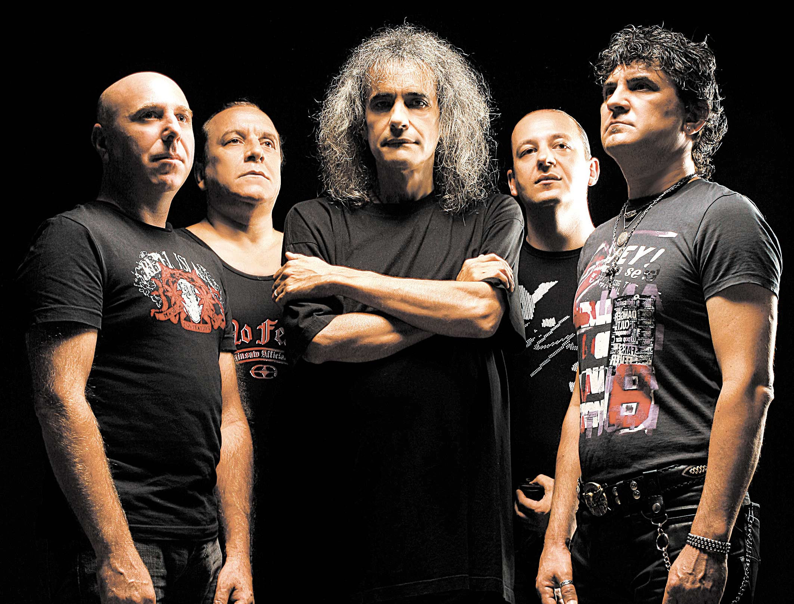

“Only for You” - IRIS
Biography
IRIS is a Romanian rock band established in 1976 by Ioan Dumitrescu (drums), Ion Olteanu (lead solo guitar, vocals) and Emil Lechinţeanu (bass guitar). They achieved success, followed by tours throughout Romania and recordings for radio broadcast. At the 2006 MTV Romania Music Awards, Iris won the Best Rock Award and were nominated for Best Band and Best Live Act.
First Members
- Nelu Dumitrescu - drums, percussion, backing vocals (1977–present)
- Cristi Minculescu - lead vocals (1980–1982, 1985–2012, 2015-present)
- Doru 'Boro' Borobeică - bass guitar, backing vocals (1984–present)
- Valter Popa - guitar, backing vocals (1986–present)
- Relu Marin - collaborator - keyboards, backing vocals (2005–present)